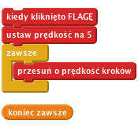
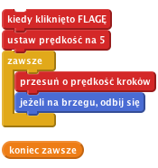
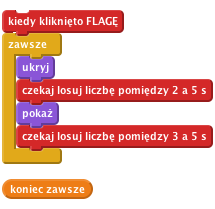
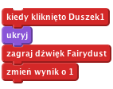
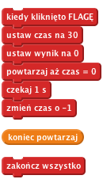

Poziom 1
Wstęp:
Ten projekt jest bazuje na popularnej angielskiej grze zwanej Whack-A-Mole: zdobywasz punkty klikając duchy, które pojawiają się na ekranie. Celem gry jest zdobycie jak największej ilości punktów w ciągu 30 sekund.
Kliknij przycisk "Wybierz nowego duszka z pliku" i dodaj ducha do projektu (znajdź kostium ghost2-b w katalogu Fantasy).
Teraz sprawmy, aby duch zaczął latać
Dodaj zmienną 'Tylko dla tego duszka' i nazwij ją "prędkość". Nowa zmienna powinna pojawić się na Scenie jako "Duszek1 prędkość".
Jeżeli widzisz tam tylko "prędkość", usuń zmienną i stwórz ją na nowo, tylko tym razem wybierz opcję 'Tylko dla tego duszka'.
Odznacz "prędkość" w panelu Zmiennych, aby nie było jej widać na Scenie. Ta zmienna będzie kontrolować prędkość lotu naszego ducha. Korzystamy ze zmiennej, aby móc później zmieniać prędkość lotu ducha.
Chcemy, aby duch zaczął latać zaraz po rozpoczęciu gry. Stwórz dla niego poniższy skrypt:

Kliknij zieloną flagę i zobacz, co robi duch. Dlaczego utknął na brzegu ekranu?
Aby duch nie zatrzymywał się na brzegu ekranu, musimy sprawić, aby zawracał za każdym razem, gdy doleci do brzegu ekranu. Dodajmy blok "jeżeli na brzegu, odbij się" poniżej bloku "przesuń o prędkość kroków" w skrypcie ducha.

Aby duch nie obracał się do góry nogami, wybierz opcję "odwróć tylko w prawo-lewo" w ustawieniach tego duszka.
Kliknij zieloną flagę.
Czy duch lata od brzegu do brzegu ekranu?
Zapisz swój projekt.
Spróbuj zmienić wartość zmiennej prędkość, aby sprawić, żeby duch latał szybciej lub wolniej.
Co zrobić, aby duch leciał coraz szybciej w trakcie gry?
(Jest to troszkę skomplikowane, więc nie przejmuj się, jeżeli jeszcze nie wiesz jak to zrobić. Podpowiemy Ci troszkę później jak to zrobić.)
Aby gra była ciekawsza, spróbujemy sprawić, aby duch losowo pojawiał się i znikał. Będzie nam do tego potrzebny kolejny skrypt, który działa w tym samym czasie co ten odpowiedzialny za poruszanie duchem. Nowy skrypt powinien niespodziewanie ukryć ducha i po jakimiś czasie znowu pokazać go na ekranie (i robić to cały czas w trakcie gry).
Dodajmy duchowi poniższy skrypt:

Kliknij zieloną flagę.
Czy duch lata od brzegu do brzegu ekranu oraz losowo pojawia się i znika?
Zapisz swój projekt.
Spróbuj zmienić wartość liczb, które użyliśmy do ukrywania i pojawiania się ducha. Co się stanie, jeżeli wybierzemy bardzo duże albo bardzo małe liczby?
Czy pomoże Ci to sprawić, aby duch latał coraz szybciej?
Aby zamienić ten projekt w grę, musimy dać graczom coś do zrobienia. Niech klikają w ducha, aby zniknął. Chcemy, aby po kliknięciu w ducha było słychać jakiś dźwięk, a sam duch znikał z ekranu.
W zakładce Dźwięki zaimportuj dźwięk Fairydust z katalogu Electronic.
Dodajmy duchowi poniższy skrypt:
Kliknij zieloną flagę.
Czy ducha znika i wydaje dźwięk, gdy go klikniesz?
Zapisz swój projekt.
Zapytaj osoby prowadzącej zajęcia, czy możesz spróbować nagrywać własny dźwięk i użyć go w swoim projekcie.
Mamy już ducha, więc wykorzystajmy go do stworzenia własnej gry! Zacznijmy liczyć punkty za każde kliknięcie na duchu oraz dodajmy limit czasu do gry. W tym celu użyjemy 2 nowe zmienne.
Stwórz nową zmienną 'Dla każdego duszka' i nazwij ją Wynik. Zmieńmy skypt ducha tak, aby przy każdym kliknięciu wartość tej zmiennej zwiększała się o jeden punkt.

Kliknij na Scenę, stwórz nową zmienną (tym razem tylko da sceny) i nazwij ją czas. Dodaj nowy skrypt uruchamiany kliknioęciem flagi, który ustawia czas na 30 oraz wynik na 0. Skorzystaj z bloku "powtarzaj aż", aby odczekać sekundę i zmniejszyć wartość czasu o 1. Akcja powinna powtarzać się dopóki licznik czasu nie dojdzie do zera. Wtedy to zakończymy grę używając bloku "zatrzymaj wszystko".

Kliknij zieloną flagę.
Zapisz swój projekt.
Jak można sprawić, aby duch latał coraz szybciej?
Udało ci się skończyć podstawową wersję gry, ale ciągle są rzeczy, które możesz zmienić w grze. Mamy dla Ciebie wyzwanie!
Gra z jednym duchem jest super, ale co jeżeli dodamy ich więcej. Na pewno gra będzie jeszcze lepsza!
Dodajmy kolejne latające duchy do naszej gry.
Kliknij zieloną flagę.
Czy masz na ekranie kilka duchów, latających od brzegu do brzegu ekranu, które niespodziewanie pojawiają się i znikają? Czy duchy znikają po kliknięciu na nie?
Zapisz swój projekt.
Brawo! To by było na tyle, teraz możesz się cieszyć swoją grą!
Nie zapomnij, że możesz podzielić się swoją grą ze swoimi przyjaciółmi i rodziną. Żeby to zrobić, kliknij menu Udostępnij.